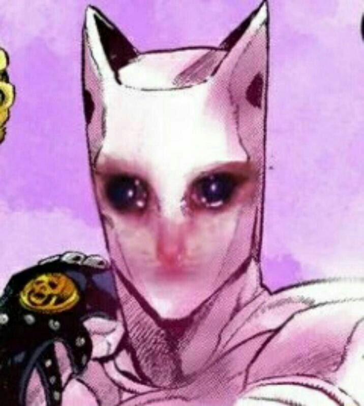

Меня зовут Кира Йошикаге. Мне 33 года. Мой дом находится в северо-восточной
части Морио, где расположены все виллы.
Я не женат. Я работаю в универмаге Kame Yu и прихожу домой не позднее 8 вечера. Я не
курю, но иногда выпиваю.
Я ложусь спать в 11 вечера, и убеждаюсь, что я получаю ровно восемь часов сна, несмотря ни на что.
Выпив стакан теплого молока и потянувшись минут двадцать перед сном, я обычно без проблем сплю до утра.
Словно ребёнок я просыпаюсь утром без всякой усталости и стресса.
На моём последнем осмотре мне сказали, что у меня нет никаких проблем со здоровьем.
Я пытаюсь донести, что я обычный человек, который хочет жить спокойной
жизнью.
Я забочусь о том, чтобы не утруждать себя какими-либо врагами – победами и поражениями, которые могли бы
потревожить мой сон.
Вот как я отношусь к обществу, и я знаю, что это приносит мне счастье. Хотя, если бы мне пришлось сражаться, я бы никому не проиграл.
Я люблю котиков
А вот и котик:3
